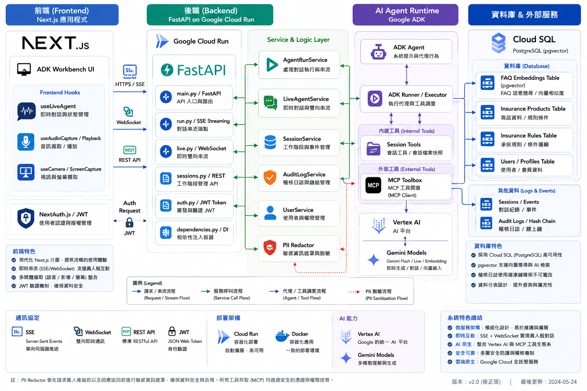

系統全景圖 (System Architecture)
👋 大家好！我是你們的技術架構導師。
今天，我們將一起深入探索這套保險推薦 Agent 系統。這不只是一個單純的聊天機器人，它結合了 Gemini Multimodal Live API、RAG (檢索增強生成)、以及分散式追蹤與安全性稽核等企業級技術。
在動手寫程式前，我們先看懂「地圖」。下圖展示了請求如何從前端 Next.js 流向後端 FastAPI，並與 Google ADK (Agent Developer Kit) 及 GCP 服務互動。

A. 核心三支柱架構
- 前端 (Next.js 15 App Router)：提供視覺化對話與儀表板介面，專為低延遲雙向串流優化。透過自定義多模態 Hooks 協調音訊 (PCM)、視訊畫面與螢幕共享的同步傳輸。
- 後端服務 (FastAPI + Google ADK)：基於
google-adk框架封裝 Agent 實例（定義於app/agent.py搭配系統提示詞prompts/insurance_agent_prompt.txt），全站採用非同步asyncio驅動。 - 企業基礎設施 (PostgreSQL + MCP Toolset)：透過 SQL 商品搜尋與 Vertex AI 向量 FAQ 檢索（pgvector），確保資料可靠性與業務規則隔離。
B. 前後端模組與 UI 元件設計
- 多模態即時 Hooks：
useAudioCapture/useAudioPlayback：音訊採樣與雙向低延遲串流播放。useCameraCapture/useScreenCapture：視訊與螢幕分享影格擷取。useLiveAgent：整合 WebSocket 轉發，傳遞音訊、影像與文字的同步通訊。
- 可視化 UI 元件庫：
WaveformVisualizer：即時麥克風及模型音訊之波形動態視覺化。InsuranceCard：以結構化、易讀的卡片呈現保單重點、預算符合度（Budget Fit）標籤。StateTree&TimelineNodes：即時呈現內部 Agent 狀態樹變化與歷史工具執行軌跡。
第一站：地端環境啟動 (Local Development)
請開啟你的終端機，按照以下指令順序，我們來「點亮」這台地端機器。
A. 環境變數配置 (.env)
在安裝依賴與啟動服務之前，必須先建立並設定本地環境變數。請將專案根目錄下的 .env.example 複製一份並命名為 .env：
cp .env.example .env接著，使用編輯器打開 .env 檔案，依據實際開發情況修改以下關鍵設定值：
- GCP 專案設定：設定
GOOGLE_CLOUD_PROJECT為你的 GCP Project ID，並確認GOOGLE_CLOUD_LOCATION區域設定（預設為us-central1）。 - 金鑰配置：若不使用 Vertex AI（即
GOOGLE_GENAI_USE_VERTEXAI=0），請在GOOGLE_API_KEY填入你的 Gemini API Key；若使用服務帳號連接，請設定GOOGLE_APPLICATION_CREDENTIALS指向金鑰 JSON 檔案路徑。 - 安全認證祕鑰：在 PoC 或開發階段，請自訂
JWT_SECRET與NEXTAUTH_SECRET。你也可以在終端機執行openssl rand -base64 32來生成高度安全的隨機密鑰。
B. 本地環境與依賴安裝
首先安裝所有 Python 核心依賴，並預備前端 UI 模組：
make install-all # 安裝 Python 依賴與虛擬環境
make ui-install # 安裝 Next.js 前端 UI 依賴C. 容器化資料庫與 FAQ 知識庫初始化
啟動本地 Postgres 容器（具備 pgvector 支援），建立測試使用者，並執行 RAG 向量嵌入（Embedding）與 FAQ 知識庫的資料寫入：
make db-up # 啟動 PostgreSQL 容器
make db-seed # 建立測試帳號 testuser / password123
make db-ingest # 執行 FAQ 知識庫向量化匯入 (gemini-embedding-001)如果你想快速清除並重新執行完整的 Init/Seed/Ingest，可以一鍵執行：make db-reset。
在開始進行開發或對話之前，建議確認資料庫是否已正確完成初始化並載入 FAQ 知識庫。你可以透過以下步驟進行連線與資料驗證：
- 開啟本地
.env檔案，尋找AUDIT_DB_PATH（或ADK_SESSION_DB_URI），可從其連線字串中取得資料庫的使用者名稱 (User)、密碼 (Password)、主機 (Host, 預設為 localhost)、埠號 (Port, 預設為 5432) 以及資料庫名稱 (Database, 預設為 insurance)。 - 開啟你熟悉的資料庫 IDE 或工具（例如 DBeaver 或 VSCode PostgreSQL Extension）。
- 新增 PostgreSQL 連線，填入上述取得的帳號與密碼等資訊。
- 連線成功後，檢查是否有
users、faq_knowledge、vec_faq_knowledge與audit_events等資料表，並確認資料表中已成功寫入測試資料與 FAQ 向量嵌入資料。
D. 本地偵錯、開發與 Playground
本地除錯提供了高彈性的開發循環工具，我們可以使用不同的指令來啟動偵錯：
- 執行後端與前端：
make run-fastapi # 啟動 FastAPI 服務 (Port 8080) make ui-dev # 啟動 Next.js 網頁 (Port 3000) - VS Code 斷點除錯：
使用
make debug-fastapi啟動帶有debugpy偵錯器支援的後端，讓你可以隨時在 VS Code 中下中斷點，追蹤 AI 推理的即時變數狀態。 - ADK Streamlit Playground：
執行
make playground啟動 ADK 內建的 Web 互動沙盒，用最直覺的 GUI 即時驗證 Agent 的工具呼叫、Prompt 約束以及模型生成結果。
E. 容器化一鍵啟動與完整堆疊託管 (Docker Compose Workflow)
除了在主機上分別透過 uv run 與 npm run 啟動服務外，本專案也支援全容器化的一鍵本地部署。透過 Docker Compose，你可以快速在背景拉起完整的微服務堆疊，極適合 PoC 快速演示與預備測試環境。
1. 核心容器化命令
專案 Makefile 中已封裝以下常用的容器生命週期管理指令：
- 啟動全站服務 (make up)：
此命令對應執行make up # 在背景啟動資料庫、Toolbox、後端 API 與前端 UIdocker compose up -d，會自動下載所需基礎映像檔，並在背景運行所有容器。 - 強制重建並啟動 (make up-build)：
當你修改了 Dockerfile、套件依賴或靜態設定，需要重新打包映像檔時使用。make up-build # 重建 Backend 與 Frontend 映像檔並重新啟動 - 僅啟動基礎相依服務 (make db-up)：
最推薦的開發模式：在主機上進行後端 (FastAPI) 與前端 (Next.js) 的開發與熱重載 (Hot-Reloading)，但讓資料庫與外部 MCP 工具包在 Docker 容器內運行。make db-up # 僅在背景啟動 Postgres 與 Toolbox 容器 - 完整關閉與清理 (make down)：
make down # 停止並移除所有本地容器與對應網路資源
2. Docker Compose 服務清單與埠號對照
在執行 make up 後，系統會拉起以下 4 個主要容器，彼此在自定義的橋接網路中通信：
| 服務名稱 (Service) | 容器名稱 (Container) | 對外埠號 (Port) | 說明 |
|---|---|---|---|
db |
insurance-db |
5432 |
具備 pgvector 支援的 PostgreSQL 16 資料庫，儲存會話、用戶畫像與 RAG 向量知識庫。 |
toolbox |
insurance-toolbox |
- | Google ADK 專用 MCP (Model Context Protocol) 服務，作為 Agent 存取外部產品搜尋工具的網關。 |
backend |
insurance-backend |
8080 |
FastAPI 非同步後端 API，負責 JWT 驗證、PII 遮蔽、審計日誌寫入，以及 WebSocket/SSE 串流轉譯。 |
frontend |
insurance-frontend |
3000 |
Next.js 15 Web 介面，提供極致流暢的多模態雙向串流、語音音訊波形視覺化與 Agent 決策軌跡面板。 |
若你在容器化運行中需要查看後端或前端的即時排錯日誌，可以使用以下 Docker 原生命令進行動態追蹤：
docker logs -f insurance-backend # 即時查看後端 FastAPI 運行日誌
docker logs -f insurance-frontend # 即時查看前端 Next.js 運行日誌所有服務啟動後，開啟 http://localhost:3000/login 並使用 testuser / password123 登入即可開始功能測試。
技術導師導讀：WebSocket 多模態串流核心實作
本章節會用技術講師帶領實作的角度，拆解保險推薦 Agent 從「一般文字串流」進階到「多模態即時互動」的關鍵設計。閱讀時請把重心放在 階段 3：WebSocket 多模態 Gemini Live 雙向串流生命週期：它是本 workshop 最能體現即時 AI Agent 工程能力的核心段落。
講師帶讀時，建議先用階段 1 與階段 2 建立必要背景，再把主要時間投入階段 3：觀察 WebSocket 如何完成安全握手、RunConfig 初始化、上下游任務併發、媒體封包轉換、模型事件回傳，以及斷線後的資源回收。
導讀 A：先建立服務依賴圖
快速掌握 AppContainer 如何組裝資料庫、Agent、Runner 與服務層，讓後續 Live 串流能站在穩定的應用生命週期上。
導讀 B：用 SSE 理解事件轉譯
把 ADK Event 轉成前端可消費的 Envelope，先理解 message、timeline、state patch 的資料形狀，再銜接到 WebSocket 的雙向即時事件。
導讀 C：主軸是 WebSocket Bidi 並行調度
重點觀察 LiveAgentService 如何同時管理 Client 到 Agent 的上游媒體流，以及 Agent 到 Client 的下游模型事件，並在中斷時安全收束所有資源。
🎯 講師帶讀代碼地圖 (Instructor Code Map)
帶學員閱讀此章時，建議依照下列順序打開檔案。前兩列是本章主軸，後兩列是支撐背景；這樣可以避免學員先陷入框架細節，而忽略 Live WebSocket 的資料流。
| 帶讀順序與核心檔案 | 技術定位 | 講師引導重點 |
|---|---|---|
1. app/services/live_agent_service.py➔ execute_live_session |
WebSocket 雙向串流協調服務 | 示範一條 Live 連線如何建立 RunConfig、啟動上下游任務、監控第一個異常，並在斷線時取消 pending task 與關閉 LiveRequestQueue。 |
2. app/streaming/upstream.py➔ upstream_task / _resize_image_if_needed |
多模態上游媒體封包處理 | 帶學員看音訊、文字、圖片、視訊影格如何被轉成 Live API 可接受的資料；特別說明圖片縮放與 JPEG 轉換如何降低延遲與錯誤率。 |
3. app/services/agent_run_service.py➔ stream & map_adk_event_to_envelopes |
SSE 串流執行與事件轉譯服務 | 用文字串流建立事件模型基礎：meta、message append、timeline、state patch 與 done，協助學員理解前端為什麼需要統一的事件 Envelope。 |
4. app/container.py➔ build_app_container |
依賴注入與容器工廠 | 補充 Live Runner、文字 Runner、Session Service、Audit Service 如何在應用啟動時被組裝，讓 WebSocket route 能保持薄而清楚。 |
⚙️ 技術生命週期導讀（主軸請聚焦階段 3）
階段 1：系統啟動與全域相依性初始化 (Application Init)
當 FastAPI 應用程式（由 app/api/main.py 的 lifespan 監聽啟動）點亮時，後端會執行全域的一致性初始化：
- 載入配置：
load_runtime_config()從.env或環境變數載入所有的模型、資料庫連接網址、JWT 金鑰，包裝成唯讀的AppRuntimeConfig。 - 組裝依賴圖 (Dependency Graph)：呼叫
build_app_container()（於app/container.py）將元件組裝：- DatabaseSessionService：連接 PostgreSQL，作為 ADK 對話狀態持久化的基石。
- Agent 實例化：從
app/prompts/insurance_agent_prompt.txt載入系統提示詞。繫結本地狀態維護工具（如save_user_profile、save_last_recommendation）與遠端 MCP 產品搜尋工具。分別實例化文字 Agent 跑一般對話、多模態 Live Agent 跑語音對話。 - Runner 執行器：分別建立對應的文字與 Live 非同步 Runner 實例。
- 業務服務層 (Services)：建立 `SessionService`、`UserService`、`AuditLogService`、以及 `AgentRunService`。
- 生命週期鉤子：初始化
AuditLogService自動建立audit_events審計日誌資料表。
階段 2：REST / SSE 串流執行生命週期 (SSE Run stream)
當使用者在 UI 發送一句話（如：「我今年 35 歲，年度預算 2 萬，幫我推薦醫療險」），後端觸發 POST /api/agent/run，其內部流程如下：
- 請求攔截與認證：
- 利用 FastAPI 的
Depends(get_current_user)機制解密 Header 中的 JWT。驗證使用者存在性並核對請求 UserId 以防止水平越權。 - 從標頭抽取或自動生成
trace_id、request_id，封裝為唯讀的AuditContext。
- 利用 FastAPI 的
- 工作階段持久化鎖定：
- 調用
AgentRunService.ensure_session()，在資料庫中以冪等（Idempotent）方式確保工作階段紀錄已初始化。
- 調用
- 啟動 SSE 串流生成器 (
sse_generator)：- 向前端發送
type: "meta"封包，宣告通訊傳輸模式。 - 記錄
user.prompt.received到審計日誌，自動遮蔽敏感 PII 欄位。 - 調用 ADK 核心 Runner 的
run_async()。
- 向前端發送
- 過濾重複用戶回顯 (Echo Filter)：
- 講師帶讀提醒：ADK 的執行流在第一個回合（Turn）通常會將用戶的原始輸入（Prompt）作為 Event 重新拋出。這裡可以帶學員觀察
AgentRunService如何用is_echoed_user_input()過濾重複 user event，避免前端對話氣泡重複繪製。
- 講師帶讀提醒：ADK 的執行流在第一個回合（Turn）通常會將用戶的原始輸入（Prompt）作為 Event 重新拋出。這裡可以帶學員觀察
- 事件協議轉換 (
map_adk_event_to_envelopes)：- 業務工具調用 (Timeline)：當模型決定調用
search_medical_products時，轉換成type: "timeline"，將 args 與 payload 發送給前端 UI（思考軌跡卡片）。若是內部状态管理工具（如get_user_profile_snapshot）則標記為internal以在 UI 隱藏。 - 文字串流 (Message)：當模型生成文字片段，若
event.partial = True，轉換為type: "message",mode: "append"，驅動前端打字機效果；當 partial 結束後累加至total_text。 - 狀態差值同步 (State Patch)：當模型調用狀態工具更新畫像（如
save_user_profile），會產生state_delta。系統將狀態 Patch 包裝成type: "state"，使前端的 State Inspector 控制台即時同步。
- 業務工具調用 (Timeline)：當模型決定調用
- 結束串流：流程結束，將最終更新狀態同步，發送最後一個
done封包，並將整個回合寫入 PostgreSQLaudit_events表，形成防篡改日誌雜湊鏈。
下方為完整的 REST / SSE 呼叫時序圖：
階段 3：WebSocket 多模態 Gemini Live 雙向串流生命週期 (Gemini Live stream)
這是本章的主要實作段落。講師可以把它當成一條完整的「即時 AI 通話管線」來帶：前端先建立 WebSocket 長連線，後端完成 JWT 安全握手，接著 LiveAgentService 建立 Live API 執行配置，最後用兩個非同步任務分別處理上游媒體輸入與下游模型回應。
請提醒學員：WebSocket Live 串流的難點不只是把資料送出去，而是要同時處理低延遲、媒體格式、錯誤邊界、使用者斷線、模型端中斷與資源釋放。下面每一小段都對應一個真實系統會遇到的工程問題。
- 建立連線與 WebSocket 安全握手 (Connection & Handshake)：
- 講師示範入口：從前端發起
/api/agent/live/ws/{session_id}長連線開始，說明為什麼瀏覽器 WebSocket 常需要把 token 放在 Query string，再由後端手動取出驗證。 - 安全邊界：路由端點呼叫
decode_access_token()核對使用者狀態。若不合規，立即回應WS_1008_POLICY_VIOLATION，讓學員理解「WebSocket 也必須和 REST API 一樣有身份與權限邊界」。 - 會話設定進入狀態：握手通過後，路由將
proactivity、affective_dialog等功能開關同步寫入 Session State，再把後續對話委派給LiveAgentService。這裡可以帶出「route thin, service owns lifecycle」的設計原則。
- 講師示範入口：從前端發起
- 初始化會話與資源配置 (Resource Allocation)：
- RunConfig 是 Live 行為的開關面板：啟用
"AUDIO"回應模態、StreamingMode.BIDI全雙工串流、繁體中文 STT/TTS，以及ProactivityConfig。講師可在此說明：模型能力、語音互動體驗與延遲表現，都會被這個配置直接影響。 - LiveRequestQueue 是前後端與模型之間的緩衝橋：它把 WebSocket 收到的音訊、圖片、文字與視訊影格整理成 ADK Runner 可消費的非同步資料流；同時也讓斷線與取消時有單一關閉點。
- Session 必須先存在：Live 串流雖然是即時連線，但仍要確保 PostgreSQL 中已有對應工作階段，否則後續狀態、審計與個人化開關都會失去落點。
- RunConfig 是 Live 行為的開關面板：啟用
- 並行調度上游與下游任務 (Concurrency & Dual-Task Scheduling)：
LiveAgentService.execute_live_session()是講師應該慢下來講解的核心方法。它利用 Pythonasyncio同步啟動兩條任務，並用asyncio.wait(..., return_when=asyncio.FIRST_EXCEPTION)監控任一側是否先出錯：- 上游任務 (Client ➔ Agent)：
upstream_task持續消費 WebSocket 傳來的音訊、影像、文字與控制訊息，清理或壓縮後寫入LiveRequestQueue。 - 下游任務 (Agent ➔ Client)：
downstream_task啟動runner.run_live()，持續讀取模型回傳事件，序列化後傳回瀏覽器播放或顯示。 - 講師提醒：這裡的重點是「兩條流同時存在」。使用者可能一邊講話，模型一邊回應；任一側斷掉，另一側都必須被取消，否則就會留下仍在等待 I/O 的背景任務。
- 上游任務 (Client ➔ Agent)：
- 上游處理機制 (Upstream Handling - Client ➔ Agent)：
upstream_task()是觀察多模態輸入的最佳入口。講師可以現場對照瀏覽器送出的封包，讓學員看到不同媒體型別如何被轉成 Live API 可接受的資料：- PCM 二進位音訊流：前端麥克風送出的 raw PCM bytes 會被包裝為 Blob，透過
send_realtime()進入模型即時緩衝。這是語音低延遲體驗的主路徑。 - 文字輸入 (
type: "text")：文字會轉成types.Part並呼叫send_content()。這裡可說明「同一條 WebSocket 不只傳音訊，也能承載控制型與補充型文字訊息」。 - 圖片輸入 (
type: "image")：Base64 圖片先解碼，再經過_resize_image_if_needed自動縮放、移除 Alpha Channel、轉成 JPEG。這不是畫質美化，而是為了降低 Live API 維度錯誤、減少頻寬與縮短模型接收延遲。 - 視訊/分享影格 (
type: "video_frame")：攝像頭或螢幕共享影格會連續透過send_realtime()推送。講師可提醒學員：影格頻率、尺寸與壓縮策略會直接影響成本、延遲與穩定性。 - 客戶端中斷命令 (
type: "close")：當前端主動要求關閉，後端不只是 break loop，而是要關閉 queue，讓下游模型端也能收到停止訊號。
- PCM 二進位音訊流：前端麥克風送出的 raw PCM bytes 會被包裝為 Blob，透過
- 下游處理機制 (Downstream Handling - Agent ➔ Client)：
downstream_task()是模型回應回到瀏覽器的路徑。它調用runner.run_live()啟動 Gemini Live API，然後非同步消費模型產生的事件：- 語音合成與轉錄觀察：當模型發話或使用者說話時，後端會接收即時事件與轉錄資訊。這是講師帶偵錯時最直觀的觀察點，可用來確認音訊是否真的被模型接收、模型是否正在生成語音回應。
- Terminal Errors 必須轉成前端可理解的訊息：當
SAFETY、PROHIBITED_CONTENT、MAX_TOKENS、RESOURCE_EXHAUSTED等錯誤出現時，系統會把錯誤包裝成 JSON 傳回前端，並主動中止下游。這讓使用者看到明確狀態，也避免後端繼續等待不會再有結果的模型串流。 - 正常事件序列化：合法事件透過
model_dump_json(exclude_none=True, by_alias=True)移除空欄位後送回 WebSocket。講師可在此提醒：即時系統中，每個多餘欄位都會在高頻事件下變成可感知的頻寬成本。
- 連線斷開與安全資源回收 (Disconnection & Cleanup)：
這是講師最應強調的工程收尾。當前端離線（觸發
WebSocketDisconnect）或下游任務拋出異常時，並行調度器會立即對仍在執行的 pending 任務發送cancel()，並確保進入finally區塊執行live_request_queue.close()。這能安全切斷底層 gRPC 連接，避免記憶體洩漏與背景協程殘留，讓系統在多人同時使用時仍能保持穩定。
帶學員完成此段後，請確認他們能用自己的話說明三件事：第一，WebSocket route 只負責握手與授權，真正的 Live 生命週期在 LiveAgentService；第二，upstream_task 與 downstream_task 是同時運作的兩條資料流；第三，任一側中斷時必須取消另一側並關閉 LiveRequestQueue。
下方為完整的 Gemini Live WebSocket 呼叫時序圖：
(FastAPI Endpoint) participant LS as LiveAgentService participant UT as upstream_task
(Upstream Task) participant DT as downstream_task
(Downstream Task) participant LQ as LiveRequestQueue participant Runner as ADK Runner
(Gemini Live API) %% 階段 1: 建立連線與認證 Client->>EP: WebSocket 升級請求 (Query 攜帶 token, session_id) activate EP EP->>EP: decode_access_token() 驗證 JWT 權限與帳號狀態 alt Token 驗證失敗 EP-->>Client: 關閉連線並回應 WS 1008 Policy Violation else Token 驗證通過 EP-->>Client: websocket.accept() (接受連線並升級) end EP->>EP: 將功能開關 (proactivity/affective) 寫入 Session State %% 階段 2: 初始化會話 EP->>LS: execute_live_session() deactivate EP activate LS LS->>LS: create_run_config() (配置 response_modalities=["AUDIO"], zh-TW, Puck) LS->>LQ: 建立並行 safe LiveRequestQueue() LS->>LS: ensure_session() (在資料庫中確保會話存在) %% 階段 3: 並行調度上游與下游任務 rect rgb(240, 248, 255) note right of LS: asyncio.wait(Upstream, Downstream, return_when=FIRST_EXCEPTION) LS->>UT: asyncio.create_task(upstream_task) activate UT LS->>DT: asyncio.create_task(downstream_task) activate DT end deactivate LS %% 階段 4: 上游傳輸流 loop 雙向互動 (上游處理) Client->>UT: 傳送音訊 PCM Bytes / 圖片 / 文字 / 視訊幀 alt 是 raw PCM 音訊 bytes UT->>LQ: send_realtime(audio_blob) else 是 文字 text JSON UT->>LQ: send_content(content) else 是 圖片 image JSON UT->>UT: _resize_image_if_needed() (轉 JPEG & 限制寬 1024px) UT->>LQ: send_realtime(image_blob) UT->>LQ: send_content(prompt) else 是 視訊影格 video_frame JSON UT->>LQ: send_realtime(frame_blob) end LQ-->>Runner: 寫入 API 緩衝區推送到 Gemini end %% 階段 5: 下游傳輸流 DT->>Runner: 呼叫 runner.run_live(live_request_queue, run_config) loop 雙向互動 (下游處理) Runner-->>DT: 迭代即時 Event (音訊 PCM 區塊, 轉錄文字, 工具呼叫) DT->>DT: 後端記錄轉錄內容 (Debug logs) alt 檢測到嚴重錯誤 (SAFETY, RESOURCE_EXHAUSTED, etc) DT->>Client: 發送 Wrapped Error Message JSON DT->>DT: 主動中斷下游並跳出迴圈 else 正常事件 DT->>Client: event_json (剔除空欄位之序列化資料) end end %% 階段 6: 連線中斷與資源釋放 note over Client, Runner: WebSocket 斷開連線 或 任務異常/取消 Client-xUT: 斷開連線 deactivate UT DT->>DT: 取消下游任務 / 中斷 iteration deactivate DT activate LS LS->>LQ: close() (關閉佇列緩衝區) note over LS: 優雅關閉 gRPC / HTTP 網路連接資源 deactivate LS
階段 4：程式碼關聯與架構設計亮點
- 相依性注入與生命週期一致性 (
app/container.py)：使用
AppContainer集中管理應用程式所有元件的依賴圖（Dependency Graph）。這種做法極大簡化了單元與整合測試中的 Mock 操作（例如呼叫reset_dependency_caches()可輕鬆替換資料庫或 Runner），保障了開發效率。 - 會話開關與 Prompt 狀態自省 (
app/services/session_service.py)：前端對功能按鍵（如同理心對話或主動發話）的更新，被包裝成一個系統事件並透過
update_session()附加至 Session 的事件歷程中。當 Agent 呼叫get_user_profile_snapshot時，便能從狀態字典中讀取config:affective_enabled與config:proactive_enabled並做出行為修正，展現了高超的會話感知（Session-Aware）自省能力。 - 低延遲多模態圖片優化 (
app/streaming/upstream.py)：在 WebSocket 連線中，頻繁傳輸高解析度影格會引發極高延遲。
_resize_image_if_needed()能在不影響模型理解的前提下，主動進行等比例縮圖、轉 RGB 及高壓縮率 JPEG，極大縮減了網絡帶寬負載，為多模態即時影像對話提供穩定支撐。 - 精準的錯誤代碼管制與優雅回收：
系統對
SAFETY,RESOURCE_EXHAUSTED等致命錯誤設有嚴格的過濾和邊界，一經觸發便主動阻斷。並在LiveAgentService中結合asyncio.CancelledError的處理與live_request_queue.close()，確保雲端高併發下連線被安全、徹底回收。
- 先讓學員看見 Echo，再說明為什麼要過濾。
在非同步 Runner 發送消息時，ADK 可能拋出包含使用者原始輸入的轉發 Event。講師可以先示範如果不攔截會造成前端重複對話氣泡，再回到is_echoed_user_input()說明事件邊界的必要性。 - 圖片縮放要從使用者體驗說起，而不是從限制說起。
Gemini Live 接收過大的圖片或影格時，可能引發維度錯誤或顯著延遲。帶學員看upstream.py時，請強調這段處理的目標是維持即時互動流暢度：限制尺寸、轉 RGB、移除透明通道、輸出 JPEG，都是為了讓模型更快、更穩定地消費影像。 - 斷線清理是 Live WebSocket 實作的收尾主題。
當使用者關閉頁面、麥克風中斷或模型端回傳 terminal error 時，後端若仍阻塞在runner.run_live迭代中，就會留下背景協程與網路資源。請帶學員對照asyncio.wait(..., return_when=FIRST_EXCEPTION)、pending task cancel、以及live_request_queue.close()，理解為什麼即時系統的穩定性取決於清理邏輯是否完整。
安全性與隱私保護 (Security First)
在保險金融領域，使用者敏感資訊（PII）與合規性是首要命脈。我們實作了多層次縱深防禦機制：
- JWT 統一身份驗證與授權 (Authentication & Auth)：
- 所有核心 API (包含 WebSocket) 都會經過
app/security/auth.py的 Token 驗證。 - 支援 OAuth2 密碼驗證流，實現多端權杖核對。REST API 採用 Header 載入 Token，而 WebSocket（因瀏覽器連線限制）則經由 Query Parameter 的
token參數進行解密與驗證。
- 所有核心 API (包含 WebSocket) 都會經過
- PII 敏感資料遮蔽 (PII Redaction)：
實作於
app/security/pii.py，透過自定義 Regex 高效過濾敏感資訊，支援去識別化（Redaction）與雜湊化（Hashing）。例如，在資料發送給外網 LLM 之前，會對台灣身分證字號、Email、電話進行自動轉換：# pii.py 正則比對示例 TAIWAN_ID_RE = re.compile(r"\b[A-Z][12]\d{8}\b", re.I) redacted, findings = redact_text(input_text) # 將 ID 轉為 [REDACTED_TW_ID] - 雜湊鏈防竄改審計日誌 (Hash Chain Audit Log)：
在
app/services/audit_log_service.py中實作。所有 Agent 動作與工具呼叫在 PII 遮蔽後，會依序寫入資料庫審計日誌（Audit Log）。每個日誌節點皆包含前一個節點的雜湊值 (
prev_hash)，形成一條不可逆、防篡改的日誌信用鏈，確保存證與稽核的完整性。
品質保證：測試與評估 (QA & Eval)
保證 AI 系統的正確性，不能只依賴一般軟體單元測試。我們建構了「傳統測試金字塔」與「AI 評估 (ADK Evals)」的雙重驗證迴圈：
A. 本地測試金字塔 (Testing Pyramid)
使用 pytest 搭配 pytest-asyncio 實作完整的自動化測試套件（詳見 tests/）：
- 單元測試 (Unit Tests)：
pytest tests/unit/- 驗證會話管理 CRUD (
test_session_service.py) 與使用者資料檢索邏輯 (test_user_service.py)。
- 驗證會話管理 CRUD (
- 整合與安全性測試 (Integration & Security)：
pytest tests/integration/- 驗證 API 路由在未授權下拋出 401 錯誤、審計日誌雜湊鏈防竄改是否無縫串接，以及 PII 遮蔽演算法的正確性 (
test_pii_redaction.py)。
- 驗證 API 路由在未授權下拋出 401 錯誤、審計日誌雜湊鏈防竄改是否無縫串接，以及 PII 遮蔽演算法的正確性 (
- 負載測試 (Load Tests)：
- 位於
tests/load_test/下，使用Locust進行 API 併發與 WebSocket 連線吞吐量壓力測試。
- 位於
B. ADK 智慧評估迴圈 (Eval-Fix Loop)
傳統 pytest 無法對模型「答非所問」或「幻覺推薦」進行量化打分。因此，我們利用 Google ADK 內建的 Evals 評估框架，結合 LLM-as-a-Judge 評估指標，設計了五大主題 Evalsets：
- 核心對話 (Core Evals)：
make eval-core(驗證基本保單搜尋、推薦關聯與完整資訊補全)。 - 安全性邊界 (Safety Evals)：
make eval-safety(驗證系統抵禦惡意 Prompt Injection 的能力，並確保 PII 不被 echo 回應給用戶)。 - 即時互動情境 (Live Evals)：
make eval-live(針對 Live 模式下的情感共鳴 (Affective Empathy) 與主動建議評分)。 - 會話歷史記憶 (Session Aware)：
make eval-session-aware(檢核 Agent 是否能記住上個回合的使用者偏好或歷史推薦)。 - 全域指標評估 (All-in-One)：執行
make eval-all。遍歷所有 evalsets 並產出視覺化報告，評分準則涵蓋Instruction Following、Tool Selection Accuracy等關鍵指標。
營運與觀測 (Observability)
當 AI Agent 開始處理真實世界的業務，我們需要實時、全方位的「觀測之眼」。專案實作了多維度的可觀測性架構：
A. OpenTelemetry 分散式追蹤 (Agent Tracing)
- 標準 Conventions：符合 OpenTelemetry 針對 GenAI 設計的語意規範，系統啟動時會自動捕捉
invoke_agent呼叫、工具調用細節（Tool Execution）與底層 LLM 的時間消耗。 - 自定義追蹤裝飾器：
在會話意識與狀態管理工具（
app/tools/session_tools.py）中，我們使用@tracer.start_as_current_span裝飾本地操作（如save_user_profile），可在 GCP Trace Explorer 內深度洞察各工具在雙向非同步環境下的精確耗時。
B. 結構化日誌與 Prompt/Response 安全備份
- Cloud Logging：整合 GCP Cloud Logging，特別記錄
register_feedback使用者回饋等互動資料。 - Prompt/Response 備份：在設定
LOGS_BUCKET_NAME後，系統會將輸入輸出備份到 GCS。預設啟用NO_CONTENT隱私保護模式，保護敏感的個人對話數據。
C. BigQuery Agent Analytics 與成本監控
我們在 app/config.py 整合了 BigQueryAgentAnalyticsPlugin。此插件會非同步將對話的生命週期事件（如 LLM_REQUEST、LLM_RESPONSE、STATE_DELTA）寫入指定的 BigQuery 資料表中，帶來以下效益：
- Token 成本即時剖析：
-- 計算平均 Token 消耗與 LLM 延遲 SELECT AVG(usage_total_tokens) as avg_tokens, AVG(total_ms) as avg_llm_ms FROM `your_project.agent_analytics.v_llm_response`; - 最耗時工具排行 (Bottleneck Analysis)：
SELECT tool_name, COUNT(*) as call_count, AVG(total_ms) as avg_latency_ms FROM `your_project.agent_analytics.v_tool_completed` GROUP BY tool_name ORDER BY avg_latency_ms DESC;
可觀測性架構具備優雅降級特性。在本地執行 make playground時，若偵測到無 GCP 環境，OTel 自動切換至 No-Op 模式，不拖累本地開發效能；BigQuery 插件若未配置環境變數則自動跳過初始化。
個人沙盒環境：Dev 部署 (Dev Deployment)
在進入正式 Staging 與 Production 提交前，建立專屬的雲端個人開發沙盒（Sandbox）是非常重要的實戰步驟。這不僅能協助你驗證真實雲端環境下的 IAM 權限、安全金鑰控制與資料庫連線，還能實測在廣域網路（WAN）下多模態雙向串流的真實延遲與穩定度。
本章節將引導你從零開始，依循標準 DevOps 流程將保險推薦 Agent 部署到 GCP 專案（區域：us-central1），並自動配置儲存在 GCS 儲存桶中的 Terraform 遠端狀態管理。
一、 第一階段：先決條件與 OIDC / GCP 身分驗證 (Prerequisites)
在開始部署前，必須先在本地主機完成環境變數配置，並透過 Google Cloud SDK 授權取得本機程式執行憑證（ADC）：
- 建立環境變數檔案 (
.env)：在專案根目錄建立並設定 GCP 部署相關變數。本專案的
Makefile會在執行時自動載入此檔案，免除手動輸入參數的麻煩（請確保.env檔案已被加入.gitignore中以防外洩）：GCP_PROJECT_ID=<YOUR_GCP_PROJECT_ID> GCP_REGION=us-central1 PROJECT_NAME=insurance-agent ENV_NAME=dev - 登入並設定預設 GCP 專案：
開啟終端機，執行以下認證與專案綁定指令：
gcloud auth login gcloud config set project <YOUR_GCP_PROJECT_ID> # 建立本機 Application Default Credentials (ADC) 憑證 # 【極重要】：Terraform 與本地 Python 腳本連線 GCP 資源時，強烈需要此 ADC 憑證來建立連線與 GCS Bucket！ gcloud auth application-default login - 啟用 GCP 核心基礎服務 APIs：
若你的專案是全新建立的，請手動啟用以下必要 API 服務：
gcloud services enable cloudresourcemanager.googleapis.com serviceusage.googleapis.com
二、 第二階段：雲端基礎設施與容器服務部署 (Infrastructure)
得益於專案中高度封裝的 Makefile，Terraform 初始化與 Backend 遠端 State GCS Bucket 的檢查建立已完全自動化。我們只需依序執行以下三個核心指令：
- 生成 Terraform 設定檔並確保 State Bucket 存在：
此指令會自動分析
.env設定，檢查雲端是否已存在 Terraform 專屬 State Bucket（如gs://<GCP_PROJECT_ID>-terraform-state），若不存在則會自動在雲端建立，並動態生成本地的dev.tfbackend設定檔：make tf-gen-config - 建置並推送多模態 Docker 映像檔至 Artifact Registry：
此步驟會自動在雲端建立 Artifact Registry 儲存庫（預設名稱為
insurance-agent-repo）、並在本地建置後端 FastAPI、前端 Next.js 以及 Toolbox MCP 容器映像檔，隨後安全推送到雲端儲存庫中：make build-push - 初始化並套用 Terraform 雲端資源部署：
這會載入剛才生成的 backend 設定，執行初始化並正式套用、點亮所有的雲端資源部署計畫：
make tf-init make tf-plan make tf-apply💡 雲端自動化專家提示 (Cloud Deployment Shortcuts)：- 如果你想一鍵初始化並套用 Terraform，可執行：
make setup-dev-env - 如果你想自動一鍵打包映像檔、推送並 Apply 部署，可執行：
make gcp-deploy
- 如果你想一鍵初始化並套用 Terraform，可執行：
🛠️ 個人沙盒部署架構摘要 (Deployed Services)
Terraform 執行完畢後，將會在你的 GCP 專案中完成以下雲端企業資源的自動配置：
| 技術領域 (Domain) | 部署資源 / 服務名稱 | 架構優勢與細節說明 |
|---|---|---|
| 1. 計算 (Compute) | Cloud Run v2 (Backend) | 處理核心對話。採用 Sidecar 雙容器架構：同時運行 FastAPI 主應用容器與 Toolbox 輔助容器。 |
| 2. 計算 (Compute) | Cloud Run v2 (Frontend) | 獨立運行的 Next.js Web 服務，專為低延遲雙向多模態對話進行前端組態優化。 |
| 3. 資料 (Database) | Cloud SQL (PostgreSQL 15) | 代管式 PostgreSQL 資料庫。其密碼、使用者資訊由 Terraform 自動寫入 Secret Manager，不以明文暴露。 |
| 4. 儲存 (Storage) | GCS Bucket (State & Telemetry) | 包含 Terraform 狀態儲存桶、Cloud Build 構建日誌儲存桶，以及接收 GenAI Telemetry 完整的對話 Payload 儲存桶。 |
三、 第三階段：雲端資料庫設定與 FAQ 知識庫向量化 (DB Setup)
在基礎設施就緒後，必須將資料表 Schema 結構寫入雲端的 Cloud SQL 實例中，並匯入初始商品資料與 FAQ RAG 向量資料。此指令會自動在背景啟動 Proxy、安全獲取秘密憑證並完成一切對接：
- 執行自動化資料庫初始化與向量化：
make gcp-db-setup - 自動化初始化流程說明 (Pipeline Details)：
此一鍵指令背後依序執行了以下自動化操作，保障雲端與本機流程的完美隔離：
- 自適應提取配置：透過 Terraform Output 獲取雲端資料庫執行個體的 Instance Connection Name、使用者與目標 DB 名稱。
- 安全憑證提取：從 Secret Manager 中安全抓取資料庫密碼，防止密碼明文出現在日誌或腳本中。
- 安全連線通道：在背景以本地容器啟動
cloud-sql-proxy，並等待本地5432連接埠就緒，與雲端 Cloud SQL 建立加密的 TLS 安全連線通道。 - 執行結構初始化：使用 PostgreSQL 容器作為臨時用戶端，連接 Proxy 通道，依序寫入：
db/schema.sql（核心業務：建立產品、規則與使用者畫像資料表）。db/audit_schema.sql（合規審計：建立雜湊鏈稽核資料表）。db/seed.sql（預設商品：寫入商品種子資料與保單檢索關聯規則）。
- 匯入預設測試使用者：運行
scripts/seed_user.py，在雲端資料庫中安全寫入測試帳號（testuser / password123）。 - FAQ RAG 向量知識庫載入 (Vector Ingestion)：運行
scripts/ingest_faq_embeddings.py。此步驟會載入 FAQ 文字，呼叫 Vertex AI Text Embeddings API 產生 768 維度的高精度嵌入向量（Embedding），隨後安全存入 Cloud SQL 的 pgvector 向量資料表中。 - 回收通道與清理：初始化完成後，自動關閉背景運行的 Proxy 進程，釋放系統資源。
- 手動連線與除錯連線資訊（選用）：
如果您需要手動連線至雲端 Cloud SQL 進行檢測，可使用以下輔助指令：
make tf-db-password # 從 Secret Manager 提取並列印密碼 make gcp-db-proxy # 手動在本地背景拉起 5432 對應雲端 SQL 的安全通道
四、 雲端 Telemetry 遙測與雙軌日誌架構 (GenAI Telemetry)
為在 Sandbox 環境中完整重現並分析 GenAI 對話，本專案在個人開發沙盒就配置了與正式生產環境一致的「元資料與 Payload 分離儲存」雙軌遙測方案：
- 1. 元資料安全紀錄 (Cloud Logging - Metadata Only)：
在
app/app_utils/telemetry.py中，系統會將OTEL_INSTRUMENTATION_GENAI_CAPTURE_MESSAGE_CONTENT設為NO_CONTENT。因此寫入 GCP Cloud Logging 的日誌僅包含 API 呼叫元資料（如 Token 數、API 耗時與 Trace ID），不包含敏感的 Prompt/Response 對話 payload，節省日誌儲存成本並保護個資隱私。 - 2. 完整 Payload 隔離備份 (GCS Bucket - JSONL format)：
透過設定
OTEL_INSTRUMENTATION_GENAI_COMPLETION_HOOK="upload"，當 API 請求完成時，Python 應用程式會非同步將包含完整對話歷程、多模態上下文的 JSONL 檔案上傳至專屬的 GCS Telemetry Bucket (gs://<PROJECT_ID>-logs-data) 中，並在 Cloud Logging 元資料中提供其 URI 指針（messages_ref_uri）。 - 3. BigQuery 外部資料表實時 Join (BigQuery completions_view)：
為了避免在 BigQuery 中重複儲存龐大的對話日誌，Terraform 會自動建立一個 BigQuery External Table（指向 GCS 中的 JSONL 檔案）與 Cloud Logging Linked Dataset。隨後利用
deployment/terraform/sql/completions.sql自動建立completions_view視圖。我們只需用單一 SQL 查詢該 View，BigQuery 就會自動根據日誌中的 `messages_ref_uri` 實時 Join GCS 的 JSONL Payload，實現大數據去重、Token 成本監控與幻覺排查！
五、 開發沙盒故障排除問答 (Sandbox Troubleshooting Q&A)
在將資源點亮到 GCP 個人沙盒時，若操作順序不當或狀態未同步，可能會遇到以下問題，請依照對應指示快速排除：
Q: 執行 make tf-apply 時遇到 Error 409: Already Exists 該如何解決？
【問題原因】
這通常發生在重新佈署或本地狀態檔案 (terraform.tfstate) 遺失、毀損、或未與雲端同步時。Terraform 嘗試建立的資源（例如專屬服務帳號或 BigQuery 連線）在 GCP 專案中其實已經存在，但目前的本地 State 中沒有記錄，導致建立動作衝突。
【解決方案】
使用 terraform import 指令將現有的雲端資源安全匯入到本地的 Terraform 狀態管理中。
【操作步驟】
- 切換到 Terraform Dev 目錄：
cd deployment/terraform/dev - 根據報錯訊息中的資源路徑，執行匯入（以下為常見資源的匯入範例，請替換專案 ID）：
- 匯入應用程式 Service Account：
terraform import module.agent_infrastructure.google_service_account.app_sa projects/<PROJECT_ID>/serviceAccounts/insurance-agent-app@<PROJECT_ID>.iam.gserviceaccount.com - 匯入 BigQuery 遙測資料集：
terraform import module.agent_infrastructure.google_bigquery_dataset.telemetry_dataset projects/<PROJECT_ID>/datasets/insurance_agent_telemetry - 匯入 BigQuery 遙測連線：
terraform import module.agent_infrastructure.google_bigquery_connection.genai_telemetry_connection projects/<PROJECT_ID>/locations/us-central1/connections/insurance-agent-genai-telemetry
- 匯入應用程式 Service Account：
- 匯入成功後，重新執行
make tf-apply即可恢復正常狀態同步。
Q: 執行 make tf-destroy 時遇到 PostgreSQL role cannot be dropped dependency 錯誤？
【問題原因】
此錯誤發生在 Terraform 嘗試刪除 GCP SQL 上的 PostgreSQL 資料庫使用者 (google_sql_user) 時。在 PostgreSQL 預設的安全機制中，如果一個資料庫使用者 (Role) 建立了物件（如 Schema、資料表、View），或是被賦予了某些權限，那麼該使用者就無法被直接刪除，必須先手動移除或轉移那些依賴的物件與權限，導致 Terraform 的銷毀流程被阻斷。
【解決方案】
本專案的 make tf-destroy 指令已內建自動修復邏輯。 它會先執行 terraform state rm 將該使用者從狀態中移除，讓 Terraform 略過「刪除使用者」的步驟，直接刪除整個 Cloud SQL 執行個體。
如果您是在 Dev 目錄下手動執行 terraform destroy 而中斷，請參考以下步驟解決：
- 進入 Terraform Dev 目錄：
cd deployment/terraform/dev - 將資料庫使用者從本地 Terraform State 中剝離（告訴 Terraform 不要再管這個資源了）：
（執行成功會顯示terraform state rm module.agent_infrastructure.google_sql_user.db_userRemoved module.agent_infrastructure.google_sql_user.db_user） - 重新執行銷毀指令。此時 Terraform 會直接跳過該用戶的刪除，直接整台拔除 Cloud SQL 實例：
terraform destroy -auto-approve
Q: 執行 make gcp-db-setup 遇到 Error 125 且提示 cloud-sql-proxy 啟動失敗？
【問題原因】
這通常是 Docker 啟動掛載路徑錯誤。在 make gcp-db-setup 流程中，指令會嘗試將本機的 Google Cloud 認證（ADC）掛載到 cloud-sql-proxy 容器中。如果本機找不到憑證檔案，或是 /tmp/adc_db_setup.json 建立失敗，Docker 會因為掛載路徑無效而回傳 Error 125。
// 解決方案 //
手動確保憑證檔案存在於預設路徑，並拷貝準備掛載所需的暫存檔案。
- 確認本地預設路徑
~/.config/gcloud/application_default_credentials.json是否有憑證。若無，請先執行gcloud auth application-default login。 - 手動建立掛載暫存檔案：
cp ~/.config/gcloud/application_default_credentials.json /tmp/adc_db_setup.json chmod 644 /tmp/adc_db_setup.json - 重新執行資料庫初始化：
make gcp-db-setup
Q: Terraform 報告狀態損壞 (Tainted) 或 Logging Bucket 資源不一致，該如何處理？
【問題原因】
若在套用 Terraform 時中途發生中斷，或是手動在 GCP 控制台中刪除了被 Terraform 管理的 Logging Bucket，會導致 Terraform 的本地狀態與實際雲端狀態不一致。Terraform 會將該資源標記為損壞 (tainted)，並在下次執行時報錯或強制要求重建。
// 解決方案 //
嘗試手動將該 Logging Bucket 反刪除（GCP 支援軟刪除復原），並在本地解鎖（untaint）其損壞標記。
- 列出專案中的 Logging Buckets 狀態：
gcloud logging buckets list --project=<YOUR_GCP_PROJECT_ID> --format="table(LOCATION, BUCKET_ID, LIFECYCLE_STATE)" - 復原被意外軟刪除的 Logging Bucket：
gcloud logging buckets undelete insurance-agent-genai-telemetry --project=<YOUR_GCP_PROJECT_ID> --location=us-central1 - 解除 Terraform 狀態的 Tainted 標記：
cd deployment/terraform/dev terraform untaint module.agent_infrastructure.google_logging_project_bucket_config.genai_telemetry_bucket - 重新執行
make tf-apply恢復正常同步。
Q: 執行 make gcp-db-setup 指令更新的是哪一個資料庫？具體執行細節為何？
【目標資料庫定位】
此指令更新的是 GCP 雲端上透過 Terraform 建立的 Cloud SQL 實例，並非你本地運行的 PostgreSQL 容器。它會根據 .env 中的專案 ID，透過啟動 Secure Proxy 連線到雲端的資料庫（預設使用者：user，資料庫：insurance）執行完整的結構與數據初始化。
【四大具體執行步驟】
- 背景代理建立：啟動
cloud-sql-proxy容器將雲端 5432 連線通道映射到本地。 - SQL 結構注入：連接本地映射之 5432 通道，將 `db/schema.sql` (業務結構)、`db/audit_schema.sql` (審計結構) 與 `db/seed.sql` (初始保單商品與判定規則) 灌入雲端。
- 匯入種子資料：執行
scripts/seed_user.py，匯入系統初始測試帳號。 - FAQ 知識庫向量化 (RAG Ingestion)：運行
scripts/ingest_faq_embeddings.py。此步驟讀取 FAQ 對話內容，並呼叫 Vertex AI Text Embeddings API 生成 RAG 向量，隨後寫入 Cloud SQL 向量資料表中。
當你完成雲端沙盒環境測試後，為避免持續產生 Cloud Run 與 Cloud SQL 的雲端資源計費，請務必執行銷毀指令清理雲端資源：
make tf-destroy個人沙盒環境提供完全隔離的測試空間，讓開發者在提交程式碼前，能確信服務帳號 (Service Account) 與 GCP 元件在安全政策下無礙運作。
航向雲端：Staging 部署與 CI/CD 管線
當本機與個人沙盒（Dev）環境驗證無誤後，正式進入團隊共同擁有的 Staging (測試/驗收) 與 Production (正式生產) 環境。本專案嚴格遵循 GitOps 與環境隔離策略，並透過 GCP 原生 WIF 與 Cloud Build 觸發器實現無金鑰、全自動的安全持續整合與部署流程。
一、 端到端部署流程時序圖 (End-to-End CD Flow)
下圖展示了從開發者首次環境引導 (Day 0 Bootstrap)，到 Pull Request 自動整合測試 (CI)，乃至 Staging / Production 環境晉升 (CD) 的完整自動化生命週期：
二、 部署服務與雲端架構清單 (Deployed Services)
經由自動化管線與模塊化 Terraform 部署，各雲端環境會配置以下核心資源，確保服務之安全與穩健：
| 領域 (Domain) | 部署資源 / 服務名稱 | 說明與用途 |
|---|---|---|
| 運算 (Compute) | Cloud Run (Backend) | 處理核心 Agent 邏輯。採用 Sidecar 雙容器架構，同時運行 FastAPI 主程式與 Toolbox 容器。 |
| 運算 (Compute) | Cloud Run (Frontend) | 運行 Next.js 前端應用程式，提供低延遲音訊波形與 AI 互動介面。 |
| 資料庫 (Data) | Cloud SQL (PostgreSQL 15) | 儲存使用者 Profile、Session 狀態。整合 pgvector 儲存 FAQ 的 768 維度向量資料。 |
| 儲存 (Storage) | Artifact Registry | Docker 映像檔的儲存庫。存放 Backend、Frontend 與 Toolbox 映像檔。 |
| 儲存 (Storage) | Cloud Storage (GCS) | 包含三個主要 Bucket：Terraform State 狀態桶、Telemetry Payload 桶（存放 JSONL）與 Cloud Build 構建日誌。 |
| 資安 (Security) | Secret Manager | 安全儲存敏感憑證，如資料庫 Password（insurance-agent-db-password-*）與 API 密鑰。 |
| 資安 (Security) | IAM & WIF | Workload Identity Federation 機制提供 GitHub Actions/Cloud Build 安全存取；並配置最小權限 Service Accounts。 |
| 監測 (Telemetry) | Cloud Logging & BigQuery | 收集日誌，透過 Linked Dataset 建立 completions_view 視圖，無縫整併 Metadata 與 GCS 內的 Prompt 內容。 |
三、 首次部署「冷啟動 (Cold Start)」與資料庫初始化
在自動化 CI/CD 觸發器接管之前，必須手動執行一次初始部署，用以建立 Artifact Registry 等核心依賴。忽略此步驟將導致 Cloud Build 管線因找不到遠端映像檔與狀態檔而報錯：
- 設定專案與環境變數：
調整根目錄的
.env檔案：GCP_PROJECT_ID=your-staging-project-id ENV_NAME=staging - 建立遠端狀態桶（Terraform State Bucket）：
make tf-gen-config # 建立對應環境的專屬遠端 State Bucket 並動態產出 tfbackend 配置 - 建置並推送初始冷啟動映像檔：
make build-push # 建立 AR 儲存庫並推送初始 Backend、Frontend 及 Toolbox Image - 初始化並部署 Staging 基礎設施：
make tf-init make tf-apply - 雲端資料庫一鍵初始化：
make gcp-db-setup # 在背景安全建立 Proxy、寫入 Schema、匯入 Seed 並執行 FAQ 向量化
如果在學習與頻繁重新部署過程中產生了孤兒（Orphaned）資料庫實例，可以使用 make gcp-cleanup-orphans 輔助列出並一鍵清除，避免產生額外雲端帳單費用。
四、 工作負載身分同盟 (Workload Identity Federation, WIF)
為避免使用含有高度安全洩漏風險的靜態 GCP 服務帳戶私鑰金鑰檔 (.json)，專案整合了 OIDC (OpenID Connect) WIF 技術：
- 建立 Identity Pool 與 Provider：
在 CI 主專案中執行 gcloud 註冊
github-pool與github-provider，並將 attribute 對應至 GitHub Repository 屬性。 - 無私鑰身分模擬 (Service Account Impersonation)：
模擬
cicd-runner服務帳號。此 runner SA 在 Staging 與 Production 專案中被授予遵循最小特權原則的安全性角色：roles/run.admin(Cloud Run 管理)roles/storage.admin(GCS 儲存管理)roles/cloudsql.admin(SQL 實例管理)roles/secretmanager.admin(Secret 管理)roles/bigquery.admin(BigQuery 分析管理)
五、 CI/CD 觸發器與晉升政策 (Promotion Policy)
- 持續整合 (PR 階段 -
pr_checks.yaml)：開發者發起 PR 時觸發。全自動執行
make lint(代碼格式)、make test(非同步測試) 並且在 Staging/Prod 目錄下執行terraform plan以利同僚進行架構異動代碼評審。 - Staging 環境部署 (合併 main -
staging.yaml)：PR 核准合併至
main分支後觸發。自動以 Commit SHA 為標記建置並推送映像檔，完成 Staging 資源套用。最後自動執行 ADK 品質評估make eval-all，若 AI 指標（如 PII 合規、推薦正確度）未達標準，將阻斷晉升。 - Prod 生產環境發布 (建立 Git Tag -
deploy-to-prod.yaml)：Staging 驗收無誤後，管理員在 GitHub 建立版本標籤（如
v1.0.0）時觸發。管線不會重新 Build，而是直接 Retag (晉升) Staging 映像檔為生產版prod-latest，確保代碼具備絕對的一致性；並執行terraform apply套用高可用 (High Availability) 生產配置（如開啟 DB 複本與啟用 Deletion Protection）。
結語：技術總結與架構師的提醒
👋 恭喜你完成了這份保險推薦 Agent 的全生命週期開發手冊！
作為一名優秀的 AI 系統架構師，我們的終極職責不只是開發出「能動」的 AI 代理人，而是要在安全性、品質保證、營運觀測與自動化發布等維度上，建構一個穩健、合規且高可用性的企業級智能中樞。以下為我們在此手冊中探索的六大技術核心支柱：
| 核心維度 (Pillar) | 技術關鍵實作 (Tech Stack) | 技術優勢與企業價值 |
|---|---|---|
| 1. 即時多模態互動 | FastAPI WebSockets + Gemini Live API + 前端自定義 Hooks (Audio, Camera, Screen) | 實現語音、文字、影像的全雙工、低延遲即時互動，帶來極具沉浸感的使用者體驗。 |
| 2. 會話與合規安全 | OAuth2 JWT 驗證 + PII Regex Redaction + PostgreSQL 雜湊鏈 (Hash Chain) 審計日誌 | 嚴格遮蔽敏感個資（如身分證字號），並利用前後雜湊關聯，確保審計日誌不可篡改、安全合規。 |
| 3. 知識隔離與 RAG | Model Context Protocol (MCP) Toolset + Vertex AI Embeddings + pgvector 語意檢索 | 限制 Agent 只能透過標準 API 查詢保單與 FAQ 知識庫，大幅降低 LLM 幻覺，確保推薦結果可控。 |
| 4. 品質與智慧評估 | Pytest 自動化測試金字塔 + ADK Evals 框架 (LLM-as-a-Judge 指標打分) | 結合傳統單元與整合測試，並導入「模型裁判」對 Agent 指令遵循與工具選擇進行自動化量化評估。 |
| 5. 全方位可觀測性 | GenAI OpenTelemetry 語意規範 (Tracing) + GCS 備份 + BigQuery Analytics 成本監控 | 精確掌握 Agent 與工具執行耗時，並透過 BigQuery 結構化分析 SQL 即時監控 API 成本。 |
| 6. 基礎設施與發布 | Terraform 多環境管理 + Workload Identity Federation (WIF) + Cloud Build 三階段 CD | 環境徹底分離（Dev/Staging/Prod），免密鑰模擬身分安全建置，保障 Staging 與 Prod 的穩定發布。 |
「軟體工程的本質在於管理複雜度；而 AI 系統工程的本質，則是在不確定的生成世界中，建構確定的合規防線。」—— 當你將這套系統部署至雲端，你已經具備了邁向頂尖 GenAI 架構師的堅實基礎。
🔥 接下來的行動步驟：
- 地端測試：嘗試執行
make test與make eval-all，觀察你的 Agent 如何在本地通過所有品質守門員。 - 快速調優：使用
make playground來微調 Prompt 或調整db/tools.local.yaml中的工具描述，感受 Evals 分數的變化。 - 航向雲端：在個人沙盒專案中執行
make setup-dev-env，體驗一鍵將基礎設施與資料庫在 Google Cloud 點亮的成就感！
文件維護：AI 技術架構團隊 | 版本：v2.1 (Instructor & Architect Edition) | 2026-06-16